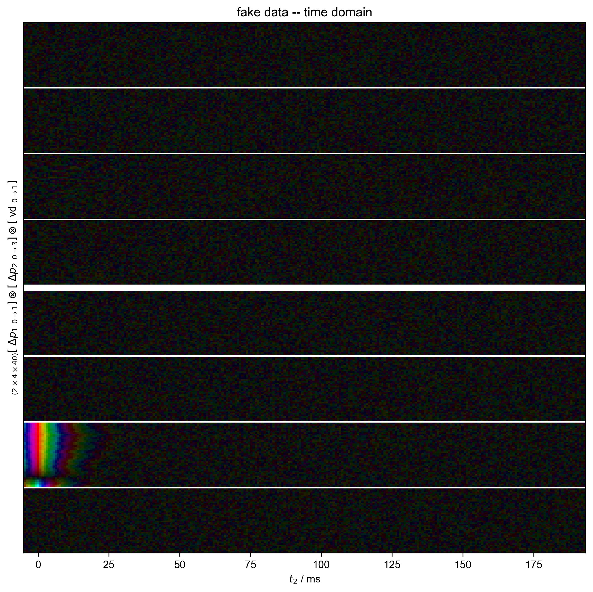
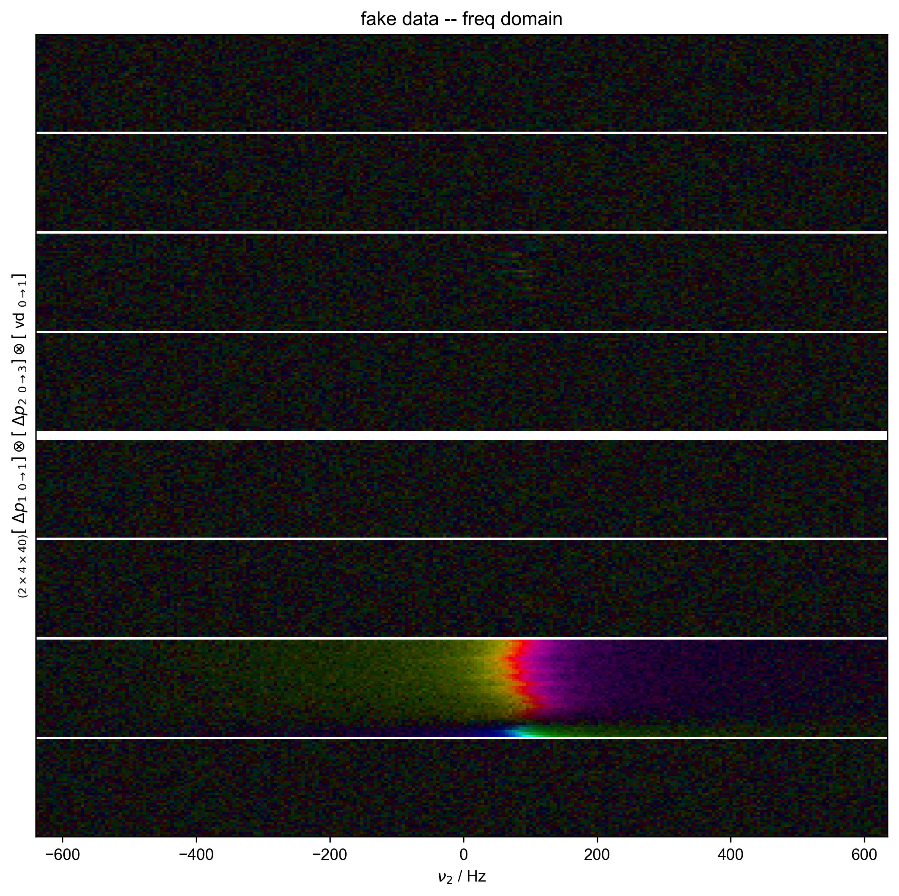
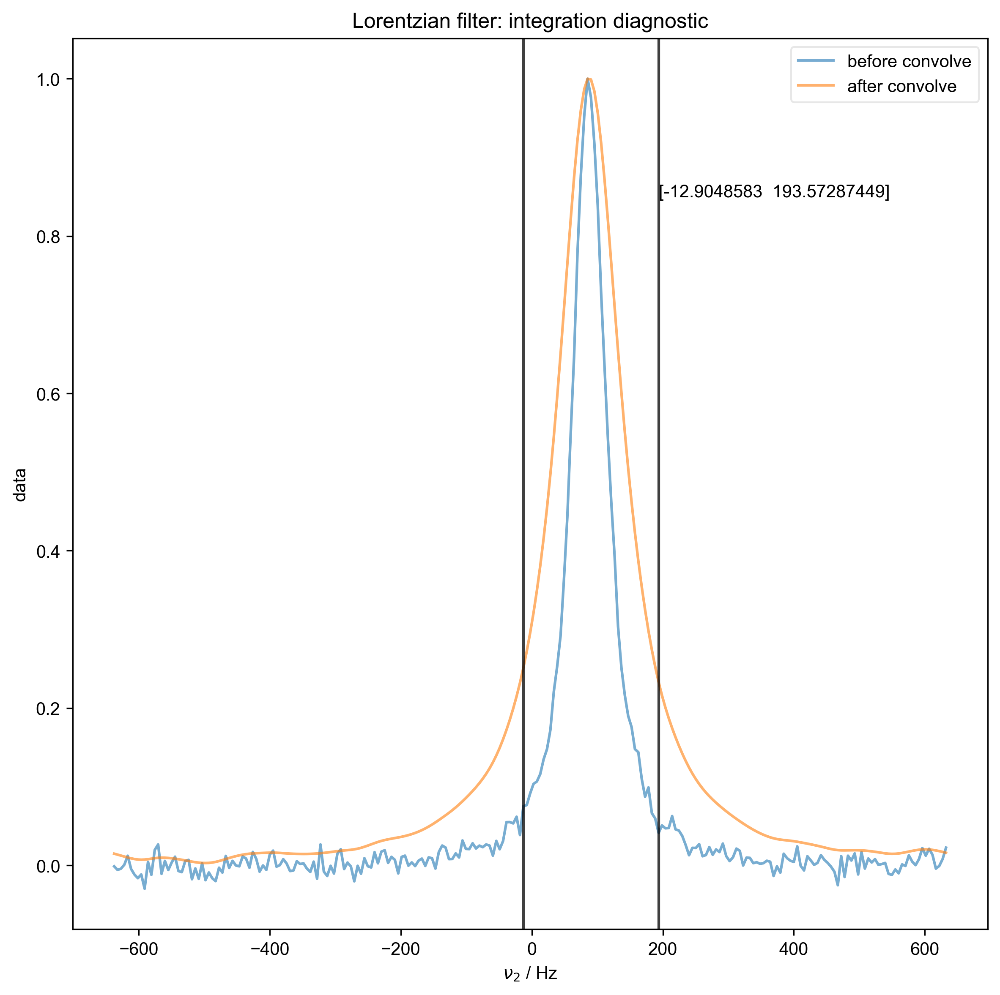
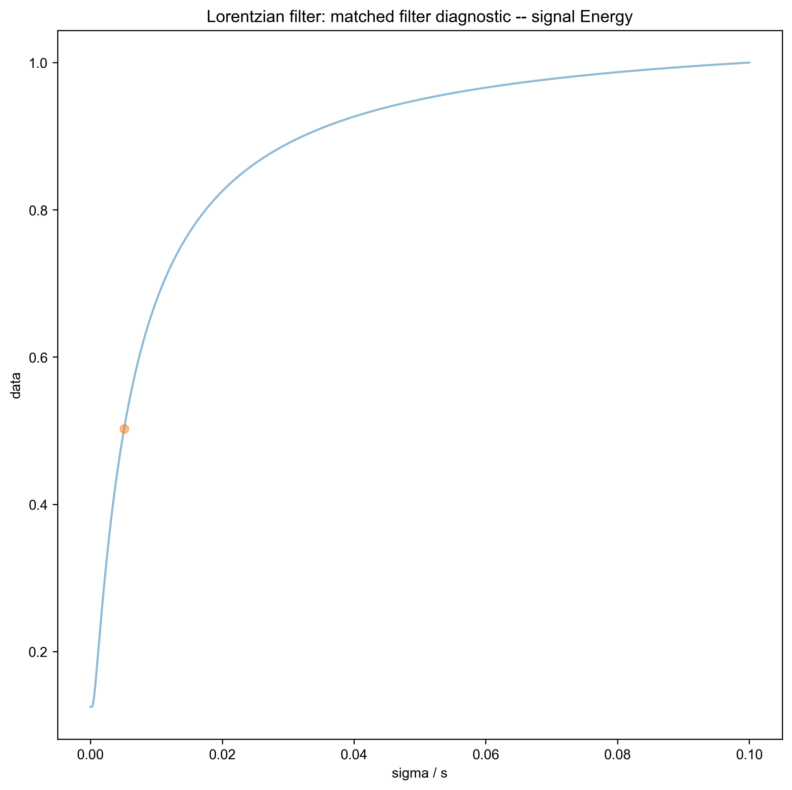
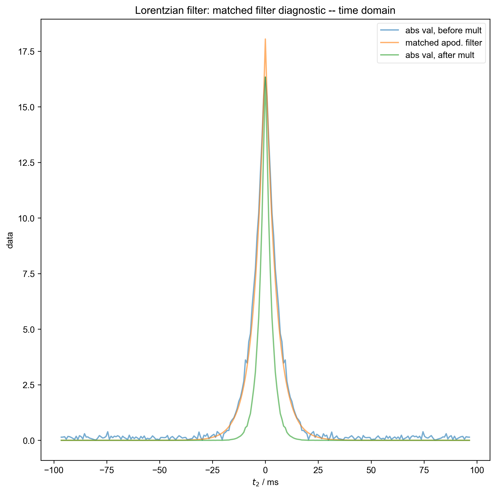
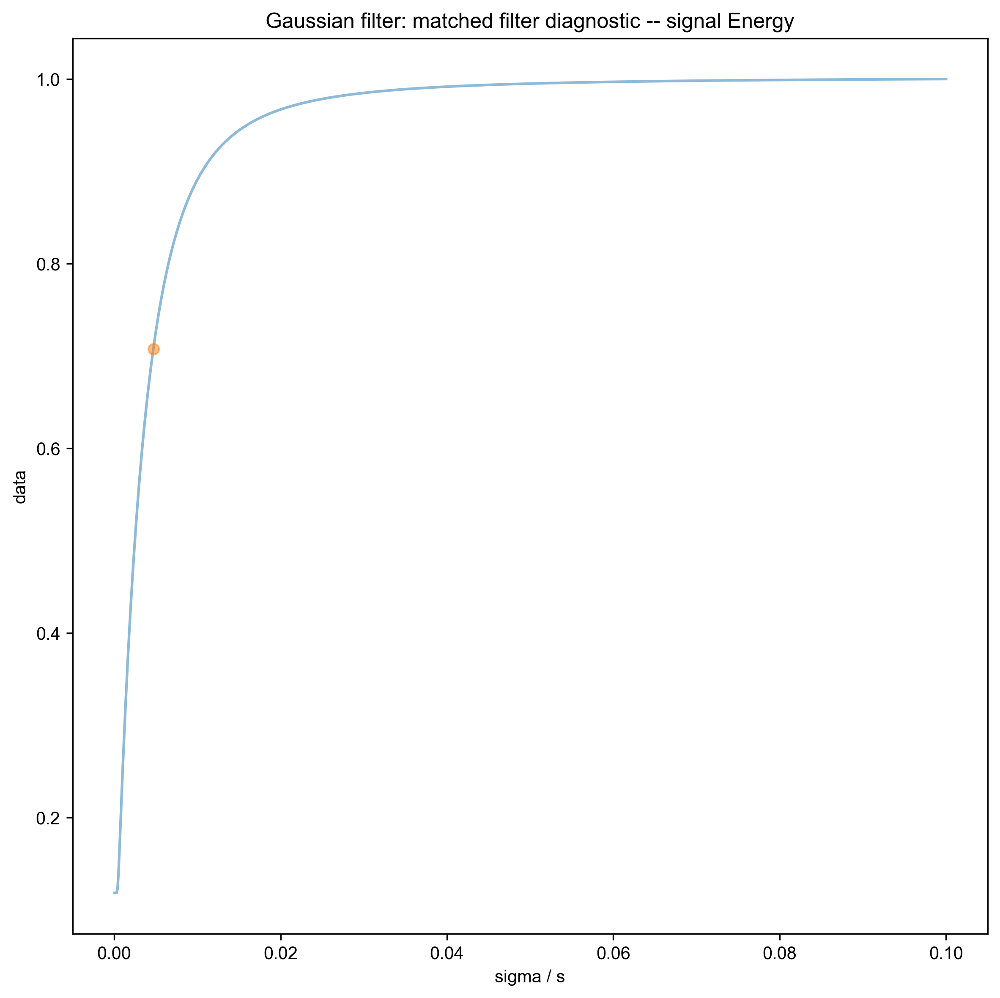

Note
Go to the end to download the full example code
Demonstrate Integrate Limits¶
For this demonstration, we generate inversion recovery data for a single peak, with a relatively mild frequency variation, so that no serious alignment is required before integration. We mimic the 8-step phase cycle used for echo detection in these experiments, and include the effect of the echo time on the data detected in the time domain.
We use integrate_limits to detect the frequency limits used for peak integration, based on a matched Lorentzian filter on our frequency domain data.
We illustrate the position of the frequency limits with vertical lines on the final plot.
- 
- 
- 
- 
- 
- 


C:\Users\jmfranck\pyspecdata.0.log appears to be locked or otherwise inaccessible: I'm going to explore other options for fileno
---------- logging output to C:\Users\jmfranck\pyspecdata.4.log ----------
c:\users\jmfranck\git_repos\proc_scripts\pyspecProcScripts\first_level\fake_data.py:58: SymPyDeprecationWarning:
Passing the function arguments to lambdify() as a set is deprecated. This
leads to unpredictable results since sets are unordered. Instead, use a list
or tuple for the function arguments.
See https://docs.sympy.org/latest/explanation/active-deprecations.html#deprecated-lambdify-arguments-set
for details.
This has been deprecated since SymPy version 1.6.3. It
will be removed in a future version of SymPy.
thefunction = lambdify(mysymbols, expression, "numpy")
c:\users\jmfranck\git_repos\pyspecdata\pyspecdata\core.py:1959: UserWarning: marker is redundantly defined by the 'marker' keyword argument and the fmt string "o" (-> marker='o'). The keyword argument will take precedence.
retval = myplotfunc(*plotargs,**kwargs)
C:\ProgramData\Anaconda3\lib\site-packages\matplotlib\cbook\__init__.py:1335: ComplexWarning: Casting complex values to real discards the imaginary part
return np.asarray(x, float)
Determined frequency limits via Lorentzian filter of [-12.9048583 193.57287449]
Determined frequency limits via Gaussian filter of [ 7.74291498 178.08704453]
from pylab import *
from pyspecdata import *
from pyspecProcScripts import *
from numpy.random import normal, seed
from numpy.linalg import norm
import sympy as s
from collections import OrderedDict
seed(2021)
rcParams['image.aspect'] = 'auto' # needed for sphinx gallery
# sphinx_gallery_thumbnail_number = 4
init_logging(level="debug")
with figlist_var() as fl:
# {{{ generate the fake data
# this generates fake clean_data w/ a T1 of 0.2s
# amplitude of 21, just to pick a random amplitude
# offset of 300 Hz, FWHM 10 Hz
t2, td, vd, ph1, ph2 = s.symbols('t2 td vd ph1 ph2')
echo_time = 5e-3
data = fake_data(
21*(1 - 2*s.exp(-vd / 0.2))*s.exp(+1j*2*s.pi*100*(t2) - abs(t2)*50*s.pi),
OrderedDict([
("vd" , nddata(r_[0:1:40j], "vd")),
("ph1" , nddata(r_[0, 2] / 4.0, "ph1")),
("ph2" , nddata(r_[0:4] / 4.0, "ph2")),
("t2" , nddata(r_[0:0.2:256j]-echo_time, "t2"))]),
{"ph1": 0, "ph2": 1},
scale=20.)
# {{{ just have the data phase (not testing phasing here)
data.setaxis('t2', lambda x: x-echo_time).register_axis({"t2":0})
data = data['t2',0:-3] # dropping the last couple points avoids aliasing
# effects from the axis registration
# (otherwise, we get "droop" of the baseline)
# }}}
data.reorder(["ph1", "ph2", "vd"])
fl.next("fake data -- time domain")
fl.image(data)
fl.next("FID sliced -- time domain")
data = data['t2':(0,None)]
data['t2',0] *= 0.5
ph0 = data['t2',0].data.mean()
ph0 /= abs(ph0)
data /= ph0
fl.image(data)
data.ft("t2")
fl.next("fake data -- freq domain")
fl.image(data)
for method in ['Lorentzian','Gaussian']:
fl.basename = method + " filter:"
freq_lim = integrate_limits(data['ph1',0]['ph2',1],
convolve_method=method,
fl=fl)
fl.next("fake data -- show freq limit selection")
fl.plot(data['ph1',0]['ph2',1])
axvline(x=freq_lim[0])
axvline(x=freq_lim[-1])
print("Determined frequency limits via",method,"filter of",freq_lim)
# }}}
# }}}
Total running time of the script: ( 0 minutes 1.727 seconds)